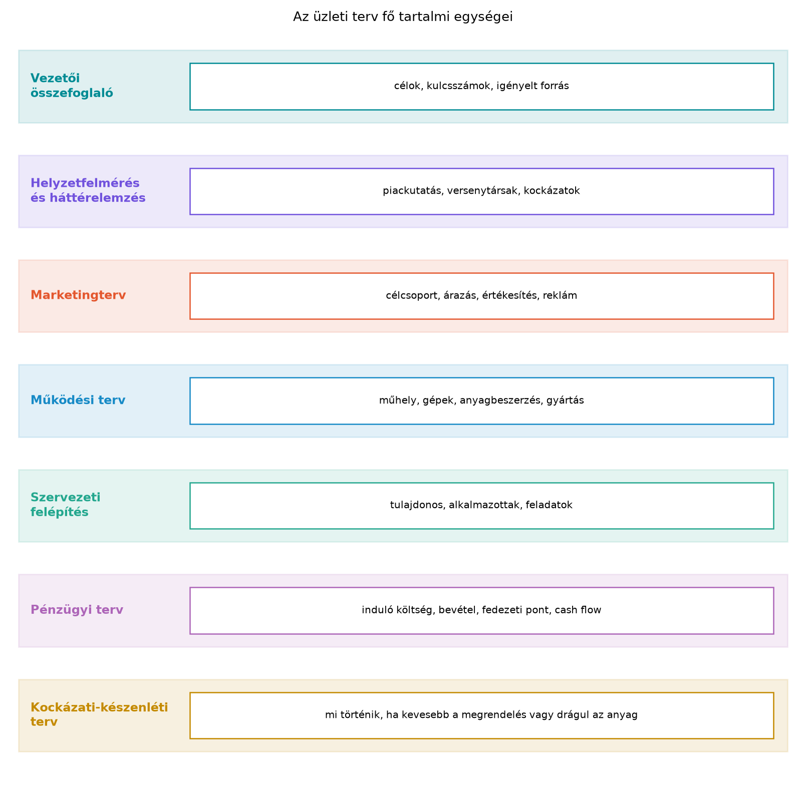

Egy asztalosmester évekig alkalmazottként dolgozott, most saját műhelyt nyit. A családja támogatja, a szerszámgépek egy részét már megvásárolta, de a bank hitelkérelmet kér, a pályázat pedig üzleti tervet. Az asztalos először azt gondolja, elég, ha „fejben megvan” a terv. Hamar kiderül: amit nem írunk le, azt nem tudjuk ellenőrizni, és más sem tudja elbírálni. Az üzleti terv nem papírmunka, hanem a vállalkozás belső térképe: megmutatja, kinek, mit, hogyan, miből és miért éri meg csinálni. Ebben az alfejezetben lépésről lépésre felépítünk egy kis asztalosműhely számára is használható egyszerűsített üzleti tervet, piackutatást végzünk, és kiszámítjuk, mikor lesz nyereséges a műhely.
Képzelj el egy induló egyéni vállalkozót, aki beépített szekrényeket, konyhabútorokat és egyedi bútorokat gyárt. A műhelye egy bérelt garázs, két gépe van, és egy segédmunkást szeretne felvenni. Havonta nagyjából 10–15 kisebb megrendelést tud elvállalni, ha minden jól megy. Ahhoz, hogy eldöntse, elinduljon-e, és hogyan árazzon, meg kell becsülnie: mennyi a havi állandó költsége, mennyi egy átlagos megrendelés anyagköltsége, és mennyiért tudja eladni a munkáját. Ez a gondolatmenet az üzleti terv és a fedezeti pont számítás alapja.
Az alábbi rétegdiagram az üzleti terv fő tartalmi egységeit mutatja:

A rétegdiagram a kész dokumentum sorrendjét mutatja fentről lefelé – így olvassa a bank vagy a befektető. Elkészíteni viszont a helyzetfelméréssel kezdjük: először a piacot és a működést kell megérteni, utána lehet pénzügyi tervet készíteni, a vezetői összefoglalót pedig utoljára írjuk meg. Ezt a logikát követjük a kidolgozott példában is.
Definíció. Az üzleti terv olyan írásos dokumentum, amely bemutatja a vállalkozás célját, a terméket vagy szolgáltatást, a célpiacot, a működés módját, a szervezetet, a pénzügyi előrejelzéseket és a kockázatokat. Célja kettős: egyrészt külső forrásszerzéshez (bankhitel, pályázat, befektető) szükséges, másrészt belső döntési eszköz a vállalkozó számára.
Szabály. Az üzleti tervnek mindig a valósághű, konzervatív becsléseken kell alapulnia. A túlzottan optimista bevételi terv hiteltelenné teszi a dokumentumot, a túlzottan pesszimista terv pedig értelmetlenné teszi a vállalkozást. A számításoknál mindig jelöljük a feltételezéseket, és adjunk meg kockázati tartalékot (például a várt bevétel 70–80%-ával számolunk).
Definíció. A piackutatás a potenciális vevők igényeinek, fizetési hajlandóságának, a versenytársak kínálatának és a piaci trendeknek a szisztematikus felmérése. Célja annak eldöntése, hogy a tervezett termékre vagy szolgáltatásra van-e elegendő fizetőképes kereslet, és milyen áron, milyen feltételekkel értékesíthető.
Definíció. A piacképesség azt jelenti, hogy a termék vagy szolgáltatás a valós piacon megállja a helyét: van rá igény, a vevők hajlandók megfizetni, és a vállalkozás nyereségesen tudja előállítani. A versenyképesség ennél szűkebb: a termék a versenytársak ajánlatához képest árban, minőségben, határidőben vagy szolgáltatásban legalább egy fontos szempontból jobb vagy vonzóbb.
Definíció. A fedezeti pont (break-even point) az az értékesítési mennyiség vagy árbevétel, amely mellett a vállalkozás eredménye éppen nulla: a bevétel fedezi az összes költséget, de még nincs nyereség. A fedezeti pont fölötti eladások hoznak nyereséget, az alattiak veszteséget.
Összefüggés. A fedezeti pont darabszámban (vagy megrendelésszámban) kifejezve:
ahol: - – állandó költség (Ft/hónap vagy Ft/év), amely akkor is felmerül, ha nincs termelés (bérleti díj, rezsi, biztosítás, saját bér minimuma, amortizáció); - – egy termék vagy átlagos megrendelés nettó eladási ára (Ft/db); - – egy termék vagy megrendelés változó költsége (Ft/db), amely csak akkor merül fel, ha termelünk (anyagköltség, segédanyag, alvállalkozó, értékesítési jutalék).
A nevezőben lévő az egységnyi fedezeti hozzájárulás: ennyi marad egy termék árából az állandó költségek fedezésére. A fedezeti pont akkor van meg, ha az egységnyi fedezeti hozzájárulások összege eléri az állandó költséget.
A grafikonon a fedezeti pont előtt (sraffozott rész) az árbevétel a költség alatt marad, utána nyereség keletkezik. A kidolgozott példa adataival megrendelés/hó. A HTML-kiadásban az állandó és a változó költség, az ár és a tervezett megrendelésszám csúszkával állítható.
Továbbvitt eredmény. Az itt elkészített üzleti tervet és piackutatási eredményeket a Marketing, promóció, vásárok és kiállítások alfejezetben használjuk fel: a marketingterv akkor lesz hatékony, ha pontosan tudjuk, kinek, mit és milyen üzenettel akarunk eladni, és ez az üzleti tervből következik.
Az alábbi ellenőrzőlista segít összeállítani egy kis asztalosműhely egyszerűsített üzleti tervét. A lépések a kész dokumentum sorrendjét követik; a vezetői összefoglalót (2. pont) mégis utoljára írd meg.
Figyelem. A pénzügyi tervben minden tételnél jelöld, hogy az érték becslés vagy ajánlat (például gépár, anyagár). A valós üzleti tervben mindig kérj be legalább két-három árajánlatot, és a mintaárakat frissítsd.
A piackutatás célja, hogy tényekkel támaszd alá az üzleti terv állításait. Egy asztalosnak nem kell bonyolult statisztikai elemzést végeznie, de néhány egyszerű módszerrel sokat megtudhat a helyi piacról.
Célok: - Van-e elegendő fizetőképes kereslet a tervezett termékre? - Mennyit hajlandók a vevők fizetni? - Kik a fő versenytársak, milyen áron és minőségben dolgoznak? - Milyen szolgáltatási hiányosságok vannak, amelyeket ki lehet használni?
Lehetőségek és területek: - Helyi kereslet: lakóövezetek, felújítási hullám, új építésű házak, társasházak. - Versenytársak: asztalosműhelyek, bútoráruházak, barkácsláncok, online szereplők. - Beszállítók: alapanyagárak, szállítási határidők, raktárkészlet. - Jogszabályi környezet: építési előírások, nyílászárókra vonatkozó teljesítménykövetelmények (ellenőrizendő: aktuális OTÉK, termékszabványok).
Módszerek és eszközök:
Példa (piackutatási kérdőív, rövid).
1. Milyen típusú bútort vagy asztalos munkát tervez vásárolni a következő 12 hónapban?
a) Konyhabútor
b) Beépített szekrény
c) Egyedi bútor
d) Ajtó/ablak
e) Felújítás
2. Mennyit szánna rá?
a) 100 000 Ft alatt
b) 100 000 – 300 000 Ft
c) 300 000 – 600 000 Ft
d) 600 000 Ft felett
3. Mi a legfontosabb szempont?
a) Ár
b) Minőség
c) Határidő
d) Egyedi igényekhez igazodás
4. Honnan tájékozódik?
a) Ajánlás
b) Internet
c) Helyi újság
d) Közösségi médiaEz a kérdőív egy nap alatt elkészíthető és kiküldhető. Már 30–50 kitöltött válasz is jó irányjelzést ad.
Készítsünk egy egyszerűsített üzleti tervet egy egyéni vállalkozóként induló asztalos számára, aki méretre gyártott bútorokat és beépített szekrényeket készít.
1. Vállalkozás adatai (mintaadatok).
Név: Kovács Asztalosműhely (egyéni vállalkozó). Székhely: 8000
Székesfehérvár, Minta utca 1. Telephely: ugyanaz, bérelt 60 m²-es
műhely. Tevékenységi kör: bútorgyártás, épületasztalos-ipari termék
gyártása (ellenőrizendő: TEÁOR-kódok). Indulás időpontja: tárgyév január
1.
2. Vezetői összefoglaló.
A vállalkozás egyedi, méretre gyártott konyhabútorokat,
gardróbszekrényeket és beépített szekrényeket kínál magánszemélyeknek és
kisebb kivitelezőknek Székesfehérvár 20 km-es körzetében. A versenyelőny
a személyes felmérés, a pontos méretre gyártás és a helyi garancia.
Induló tőkeigény: 2 500 000 Ft (gépek, szerszámok, anyagkészlet,
tartalék). A vállalkozás az első évben havi átlag 8 megrendeléssel
számol, ami a fedezeti pont (5 megrendelés/hó) fölött van, így az első
év végére kis nyereséget termel.
3. Helyzetfelmérés.
A helyi lakótelepek és családi házas övezetek folyamatos felújítási
igényt mutatnak. Három versenytárs működik a városban: két kis
asztalosműhely és egy bútoráruház. Az asztalosműhelyek árai hasonlóak,
de sokat panaszkodnak a vevők a pontatlan határidőkre. A bútoráruház
olcsóbb, de csak szabvány méretű bútorokat kínál. A piackutatás (30
kérdőív) szerint a válaszadók 60%-a tervez valamilyen bútorvásárlást, és
40%-uk fontosnak tartja az egyedi méretet.
4. Termékbemutatás.
A fő termékek: méretre gyártott konyhabútor (átlagos ár: 450 000 Ft),
beépített gardróbszekrény (átlagos ár: 280 000 Ft), egyedi bútor
(átlagos ár: 150 000 Ft). A garancia 2 év a szerelvényekre és 5 év a
szerkezeti elemekre (ellenőrizendő: a pontos jogszabályi
kötelezettség).
5. Marketingterv.
Célcsoport: 30–60 év közötti lakástulajdonosok, felújítók. Értékesítés:
személyes ajánlás, honlap, közösségi média, helyi újság. Az első évben
havi 20 000 Ft marketingköltséggel számolunk.
6. Működési terv.
A műhely 60 m², benne egy formatizáló körfűrész, egy egyengető gyalugép,
egy vastagsági gyalugép, egy asztalos marógép, kézi kisgépek,
elszívással. Anyagbeszerzés havonta egyszer, helyi fűrészáru-telepről és
lapanyag-kereskedőtől. A gyártási folyamat a szabásjegyzék, méretre
munkálás, kötések, szerelés, felületkezelés lépéseit követi.
7. Szervezet.
A tulajdonos végzi a felmérést, a gyártást és a szerelést. Egy
segédmunkást foglalkoztat részmunkaidőben. A könyvelést külső
szolgáltató végzi.
8. Pénzügyi terv.
- Induló költségek: gépek 1 200 000 Ft, szerszámok 200 000 Ft,
anyagkészlet 300 000 Ft, engedélyek és bejelentés 50 000 Ft, tartalék
750 000 Ft. Összesen: 2 500 000 Ft. - Havi állandó költségek:
műhelybérlet 120 000 Ft, rezsi (villany, fűtés, víz, internet) 60 000
Ft, biztosítás 20 000 Ft, saját bér minimuma 180 000 Ft, részmunkaidős
segédmunkás bére járulékokkal 100 000 Ft (ellenőrizendő: az arányos
minimálbér és a munkáltatói szocho alapján), marketing 20 000 Ft,
könyvelő 15 000 Ft, amortizáció 25 000 Ft, egyéb 10 000 Ft. Összesen:
550 000 Ft/hónap. - Változó költség átlagos megrendelésenként: anyag
(fa, lap, vasalat, ragasztó, lakk) 50 000 Ft, alvállalkozó
(villanyszerelés, pult) 10 000 Ft, szállítás és csomagolás 5 000 Ft.
Összesen: 65 000 Ft/megrendelés. - Átlagos nettó ár egy megrendelésre:
180 000 Ft. Ez termékmix-átlag: a havi kb. 8 megrendelés többsége kisebb
munka (javítás, csere, kisbútor, kb. 80–120 000 Ft), mellette
alkalmanként gardrób vagy konyha is van; az átlagot a saját termékmixből
kell kiszámolni (ellenőrizendő). A változó költség ennek az árnak kb. 36
%-a.
Fedezeti pont számítása:
Ez azt jelenti, hogy havonta legalább 5 átlagos megrendelést kell teljesíteni ahhoz, hogy a vállalkozás ne legyen veszteséges. Ha a vállalkozó havi 8 megrendelést tud szerezni, akkor a havi nyereség:
Természetesen ez a nyereség még nem a teljes jövedelem, mert a saját bér már az állandó költségben szerepel. A 370 000 Ft a vállalkozás nyeresége, amit visszaforgathat vagy kivehet.
9. Kockázati-készenléti terv.
- Kevés megrendelés: tartalék 750 000 Ft, ami kb. 1,4 hónap állandó
költségét fedezi, plusz a marketing erősítése. - Anyagár-emelkedés:
árajánlatok rögzítése 30 napra, alternatív beszállítók keresése. -
Géphiba: bérleti szerződés szerint a bérbeadó segít, illetve tartalék
gépész szerviz (ellenőrizendő). - Betegség: a segédmunkás betanítása az
egyszerűbb műveletekre.
Az alábbiakban két számítási példát dolgozunk ki a fedezeti pont és a piaci méret becslésére.
1. példa – Fedezeti pont több termék esetén
(egyszerűsített).
Egy asztalos különböző termékeket gyárt. Havi állandó költsége 600 000
Ft. Átlagosan a bevétele 40%-a anyag- és változó költség. Mennyi havi
árbevételt kell elérnie a fedezeti ponthoz?
Megoldás. Itt a fedezeti pontot árbevételben fejezzük ki. Az egységnyi fedezeti hozzájárulás aránya a bevételből: , azaz 60%. A fedezeti árbevétel:
Tehát havonta legalább 1 000 000 Ft nettó árbevételt kell termelnie ahhoz, hogy nullszaldós legyen.
2. példa – Piaci méret becslése.
Egy asztalos egy 50 000 fős városban és 20 km-es körzetében (összesen
120 000 lakos) szeretne beépített szekrényeket gyártani. Piackutatása
szerint évente a háztartások 3%-a vásárol ilyen terméket. Átlagos
háztartásméret 2,5 fő, tehát a háztartások száma:
.
Az éves kereslet:
Ha az asztalos a piac 5%-át szeretné megszerezni, akkor: Ez havi 6 megrendelést jelent. Ezt összevethetjük a fedezeti ponttal: ha a fedezeti pont 5 megrendelés/hó, akkor a 6 megrendelés/hó éppen csak nyereséges, tehát nagyobb piaci részesedésre van szükség vagy alacsonyabb állandó költségre. A számítás rávilágít a kockázatra.
A piackutatás eredményeit a termék piacképességének és versenyképességének értékelésére használjuk.
Piacképesség vizsgálata: 1. Igény: Van-e elég vevő, aki a terméket keresi? (kérdőív, keresletbecslés) 2. Fizetőképesség: Hajlandók-e és tudnak-e a vevők a tervezett áron fizetni? 3. Elérhetőség: A vevők megtalálják-e a vállalkozást? (marketing, ajánlás) 4. Jogszabályi megfelelés: A termék megfelel-e a vonatkozó előírásoknak (pl. bútorok formaldehid-kibocsátása, nyílászárók teljesítménynyilatkozata)? 5. Nyereségesség: A termék önköltsége alacsonyabb, mint az elérhető ár, és a fedezeti pont elérhető.
Versenyképesség vizsgálata: - Ár: A te árad alacsonyabb vagy hasonló, de jobb értéket ad? - Minőség: Anyagválasztás, kivitelezés, felületkezelés, tartósság. - Határidő: Gyorsabban szállítasz, mint a versenytársak? - Szolgáltatás: Személyes felmérés, tanácsadás, garancia, utókövetés. - Egyediség: Olyan megoldást kínálsz, amit más nem?
Példa. A fenti mini üzleti tervben az asztalos versenyelőnye a pontos határidő és az egyedi méret. A piackutatásból kiderült, hogy a vevők panaszkodnak a konkurencia késéseire, ezért a vállalkozó kiemeli: „vállalt határidőre, írásban rögzítve”. Ez piacképessé teszi az ajánlatát.
Egy fiatal asztalos, aki korábban alkalmazottként dolgozott, saját műhelyt nyitott anélkül, hogy üzleti tervet készített volna. Azt gondolta, a szakmai tudás elég. Az első hónapokban sok megrendelést kapott, mert az ismerősei ajánlották. Aztán jött egy csendesebb időszak. Kiderült, hogy a havi állandó költsége (műhelybérlet, hiteltörlesztés, rezsi) 450 000 Ft, de egy átlagos megrendelésből csak 60 000 Ft fedezet maradt. A fedezeti pont tehát 7,5 megrendelés/hó lett volna, de ő csak 4–5-öt tudott szerezni. A vállalkozás fél év alatt eladósodott, és be kellett zárnia. A tanulság: ha előre elkészíti a fedezeti pont számítást, látja, hogy vagy több megrendelést kell szereznie, vagy magasabb árat kell kérnie, vagy csökkentenie kell az állandó költségeket. Az üzleti terv nem bürokrácia, hanem életmentő eszköz.
Válaszolj röviden az alábbi kérdésekre, majd nézd meg a megoldásokat.
1. feladat (A)
Definiáld röviden az üzleti tervet és a fedezeti pontot.
2. feladat (A)
Sorold fel a piackutatás négy módszerét, és mindegyikhez írj egy példát
asztalosipari alkalmazásra.
3. feladat (B)
Egy asztalosműhely havi állandó költsége 720 000 Ft. Az átlagos
megrendelés nettó ára 200 000 Ft, a változó költség megrendelésenként 80
000 Ft.
a) Számítsd ki a fedezeti pontot megrendelésszámban!
b) Hány megrendelés kell ahhoz, hogy a havi nyereség 240 000 Ft
legyen?
4. feladat (B)
Készíts egy egyszerű versenytárs-elemző táblázatot három képzeletbeli
versenytársról (asztalosműhely, bútoráruház, online bútorgyártó).
Oszlopok: név, termékkör, árszint, minőség, határidő, erősség,
gyengeség. Töltsd ki rövid, példaszerű adatokkal.
5. feladat (C)
Egy induló asztalos vállalkozás üzleti tervében a következő adatok
szerepelnek: havi állandó költség 500 000 Ft, átlagos ár 150 000 Ft,
változó költség 70 000 Ft. A vállalkozó havi 10 megrendelést tervez, és
ebből 8-at biztosra vesz. Elemezd, hogy ez a terv reális-e, és milyen
kockázatokat rejt.
6. feladat (D)
Készíts egy rövid piackutatási tervet egy olyan asztalosműhely számára,
amelyik kültéri fa kerti bútorokat szeretne gyártani egy 30 000 fős
városban. Add meg a kutatás célját, a módszert, a mintavétel nagyságát,
és írj öt kérdést a kérdőívbe. A tervet 5–8 mondatban foglald össze.
Megoldás.
Az üzleti terv olyan írásos dokumentum, amely bemutatja a vállalkozás
célját, termékét, piacát, működését, szervezetét, pénzügyi
előrejelzéseit és kockázatait. A fedezeti pont az az értékesítési
mennyiség vagy árbevétel, amely mellett a bevétel éppen fedezi az összes
költséget, tehát az eredmény nulla.
Megoldás.
Négy módszer és példa:
1. Kérdőív: online kérdőív helyi lakosoknak arról, terveznek-e beépített
szekrényt vásárolni.
2. Interjú: beszélgetés öt kivitelezővel az igényekről és árakról.
3. Megfigyelés: versenytársak bemutatótermében árak és termékek
felmérése.
4. Próbaértékesítés: egy kis asztali dísz elkészítése és árusítása helyi
vásáron.
Megoldás.
a) Fedezeti pont:
Ellenőrzés: 8 megrendelés esetén az összes fedezeti hozzájárulás Ft, ebből 720,000 Ft az állandó költség, maradék 240,000 Ft a nyereség. ∎
Megoldás.
Példatáblázat:
| Név | Termékkör | Árszint | Minőség | Határidő | Erősség | Gyengeség |
|---|---|---|---|---|---|---|
| Helyi asztalos | Egyedi bútor | Magas | Jó | 4–6 hét | Személyes felmérés | Kapacitáshiány |
| Bútoráruház | Szabvány bútor | Alacsony | Közepes | Azonnal raktárról | Olcsó, gyors | Nincs méretre gyártás |
| Online bútorgyártó | Modul bútor | Közepes | Változó | 2–3 hét szállítás | Kényelmes rendelés | Nincs helyi garancia, szerelés |
Az adatok kitaláltak, csak a táblázat szerkezetét mutatják.
Megoldás.
A fedezeti pont:
A vállalkozó 10 megrendelést tervez, ebből 8-at biztosra vesz. A 8
megrendelés éppen a fedezeti pont fölött van, tehát kis nyereséget
hoz:
A terv reális, de kockázatos: ha a 10-ből csak 6 jön be, a vállalkozás veszteséges lesz (6 megrendelésnél a fedezeti hozzájárulás Ft, ami kevesebb, mint az 500,000 Ft állandó költség). A terv tehát csak akkor teljesül, ha a marketing és az ajánlások folyamatosan hozzák a megrendeléseket, és a 8-as becslés megbízható. Javasolt tartalék: magasabb ár, alacsonyabb állandó költség, vagy diverzifikált termékkör.
Megoldás.
Piackutatási terv (rövid összefoglaló):
Cél annak felmérése, hogy a 30 000 fős városban van-e fizetőképes
kereslet kültéri fa kerti bútorokra (pad, asztal, szék, nyugágy).
Módszer: online kérdőív helyi közösségi csoportokban, valamint személyes
megkérdezés két helyi piacon. Mintavétel: legalább 100 kitöltés.
Kérdések: (1) Van-e kertje vagy terasza? (2) Tervez-e kerti bútort
vásárolni a következő évben? (3) Milyen fából szeretné? (4) Mennyit
szánna rá? (5) Mi a fontosabb: ár, időjárás-állóság vagy dizájn? A
válaszok alapján eldönthető, hogy érdemes-e belefogni.
Az üzleti terv a vállalkozás írásos térképe: bemutatja a célt, a piacot, a működést, a szervezetet, a pénzügyeket és a kockázatokat. Fő tartalmi egységei a vállalkozás adatai, a vezetői összefoglaló, a helyzetfelmérés, a termékbemutatás, a marketingterv, a működési terv, a szervezeti felépítés, a pénzügyi terv és a kockázati-készenléti terv. A piackutatás módszerei: szekunder adatgyűjtés, kérdőív, interjú, megfigyelés és próbaértékesítés. A piacképesség azt jelenti, hogy van fizetőképes kereslet, és a termék nyereségesen előállítható; a versenyképesség a versenytársakhoz viszonyított előny. A fedezeti pont kiszámítása: . Ez megmutatja, hány megrendelés kell a nullszaldóhoz. Továbbvitt eredmény: az elkészült üzleti terv és piackutatási adatok a Marketing, promóció, vásárok és kiállítások alfejezetben alapozzák meg a marketingterv konkrét lépéseit.